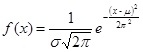
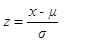

Normal:
Se dice que una variable X se distribuye normalmente
si su funcion de densidad esta dada por la siguiente expresion:

Por la forma caracteristica de la representacion de dicha funcion de densidad, se le conoce como Campana de Gauss,
en la cual toda el area bajo la curva es igual a 1. La distribucion de una variable aleatoria normal con media cero y varianza 1
se llama distribucion normal estandar. La estandarizacion se realiza mediante la siguiente transformacion:
